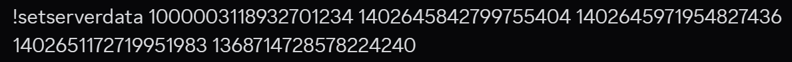

This bot only saves the gameplay and decoration parts of the collabs. You can manually save verifiers, mergers, etc. but you cannot enter its data here as the bot will freak out.
This command should be the first command to run. Turn on developer mode to add an id of the channels, roles and user ids. This command can ONLY BE USED BY THE CREATOR OF THE SERVER.
This command can only be used by the host of the collab team the server creator has set.
Upon creation, the bot will create a catergory for the collab, an info channel, a finished channel (for finished parts) and a progress channel only visible to the people who joined the parts
If your collab name has multiple words, use underscores instead of spaces (or use camel casing).
Standard type can only be "binary" or "tiers" in all lowercase. Tiers indicate that there are tiers on standards, and the person joining must be higher or equals to the role you set in [gameplay role standard] and [decoration role standard]. Binary indicates the collab can be joined if you have the roles you set in [gameplay role standard] [decoration role standard]
If there is no deco parts or gameplay parts, put a 0 in the said standards and put 0 on how many said parts there are.
Upon creation of the channels, feel free to change the names of the catergories and channel to fit your liking.
This command can only be used by the host of the collab team the server creator has set.
Simply deletes the catergory and channel created by the bot.
If your collab name has multiple words, use underscores instead of spaces (or use camel casing).
This command can only be used by the host of the collab team the server creator has set.
Edits the instructed attribute / property.
Valid properties include:
Lets a user join a collab.
The type of part can only be "gp" or "deco" in all lower case
If the collab is binary type, when the user has the gameplay / deco role they will immediately join.
If the collab is tier type, when the user has a gameplay / deco role higher than the standard then they will join.
The user can only join 2 parts per collabs.
Lets a user join a collab.
The type of part can only be "gp" or "deco" in all lower case
Upon quiting, they cannot join the collab again.
This command can only be used by the host of the collab team the server creator has set OR the collab host.
Kicks a user from a collab forcefully.
The type of part can only be "gp" or "deco" in all lower case.
When a user gets kicked, they cannot join the collab again.
Sends progress to the collab host.
You have to attach an image / video when using this command
Don't mind the mario kart. It's just an example.
Also shut up i know the time is bad
This command can only be used by the host of the collab team the server creator has set OR the collab host.
Sets the progress of the user.
Progress type can only be "WORKING" or "FINISHED" in ALL CAPITALS.
You don't need to re-edit this message. The bot will edit it itself.
This command can only be used by the host of the collab team the server creator has set
Sends the part info with users and their starting times and their progress.
This command should ONLY BE USED IN AN INFO CHANNEL, WHERE IT IS POSITIONED LAST.
If your collab contains verifiers, send YOUR OWN MESSAGE BEFORE RUNNING THIS COMMAND.